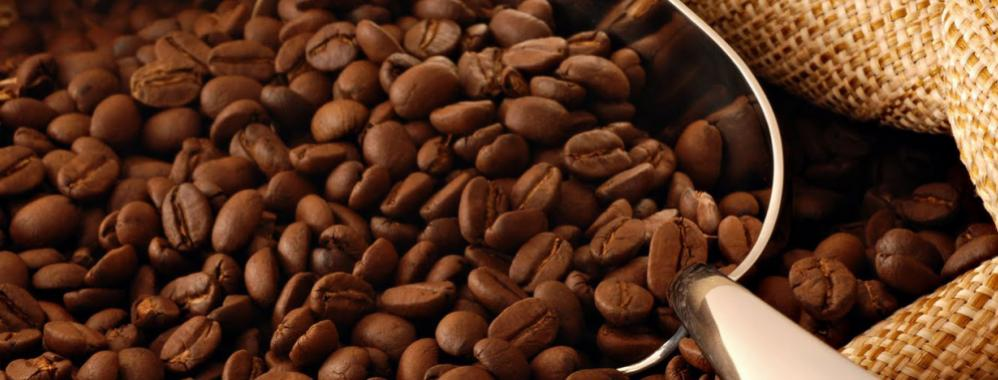
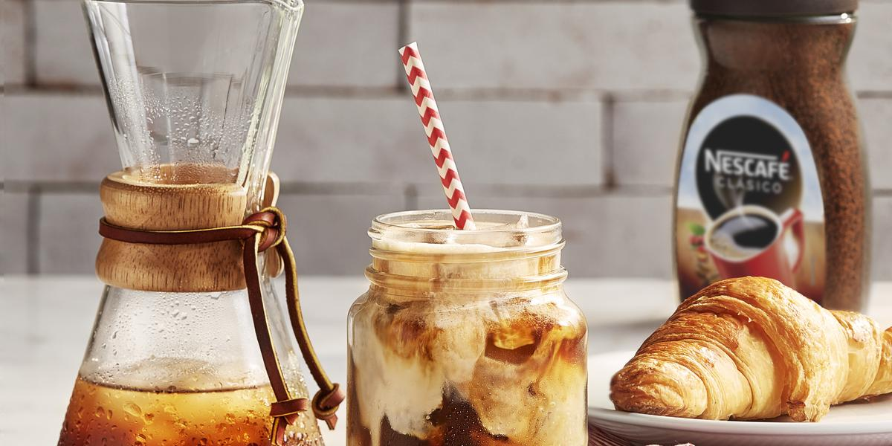
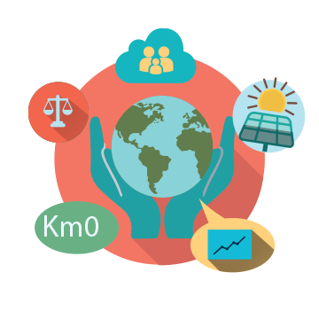
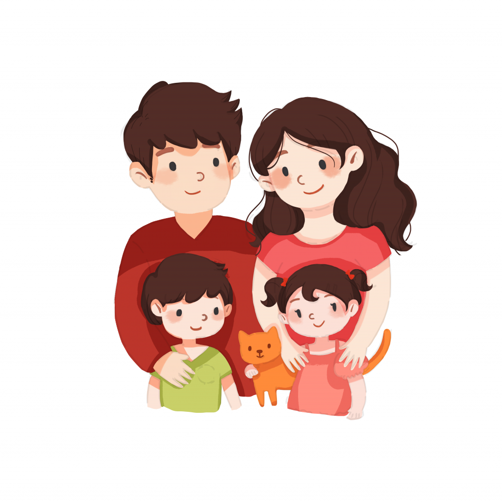

- 
Receta café helado
Ingredientes
- (5 g.) 2 cucharaditas de NESCAFÉ® Clásico
- (180 ml.) ¾ taza de agua helada
- (60 ml.) ¼ taza de leche de tu preferencia (de vaca o vegetal)
- Azúcar al gusto
- Hielo al gusto
Ver receta
Responsabilidad social
Presentamos nuestros compromisos para reducir al máximo nuestra huella en el medio ambiente. En Nestlé llevamos años trabajando en la sostenibilidad de nuestras marcas y productos. Sin embargo, sabemos que no es suficiente. Tenemos que hacer más. Y tenemos que hacerlo ahora.
El club familiar
Cupones, novedades, promociones, recetas y consejos para ayudarte a vivir mejor a través de la nutrición.
Botellas por Educación
Nuestra marca de Café embotellado ha querido unir sostenibilidad y educación a través del proyecto
BotellasxEducación, con el que han proporcionado 400 pizarras a alrededor de 200 escuelas, llegando así a más de
14.000 niños de toda España.